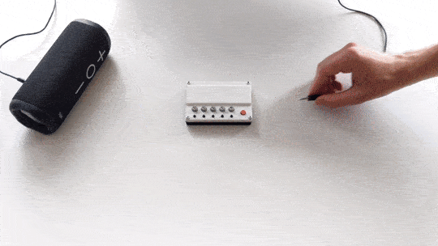
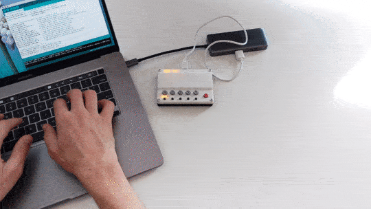

Hey friend,
I spent the last several months developing a seriously fun music gadget, and I’m starting to figure out who wants one. If you’re into this kind of thing, subscribe to the mailing list below to be notified when the BeepLab is released.
It’s a tiny portable music looper that gets you jamming immediately. It has a USB port that powers your MIDI controller and an audio jack that connects to your speaker or headphones.
I love making loops with a MIDI controller and a computer, but there's always a few speed bumps - turn on computer, log in, start up software, make new project, add new track, pick instrument - and then finally, play music.
Compare that to a guitar sitting on a stand - pick it up, and play.
So for years, I dreamed of that immediate feeling with my MIDI controller. But I didn’t want another small piano - I wanted something cheap, that loops, and works with my own MIDI controller.
It ships with software that gives you:
At its core, the BeepLab is an Arduino Uno, and the software will be provided open source. I want to give you an easy and fun way to learn electronics programming, without needing to solder anything yourself.
The BeepLab can jam with more than just a MIDI controller. It has a USB port, and a Qwiic port. Qwiic is a system of connectors that make it easy to add sensors to your project without soldering.
Some ideas:
You can also change the default instruments: the synth chip has 128 different instruments that you can use.
There are some things the BeepLab cannot do. You can only store 100 notes in recording. You can only pick from the 128 onboard instruments, no samples. And you can only listen to loops as you play them, no saving loops.
But it’s just... A. Ton. Of. Fun. I'd argue the simplicity makes it more fun, because it’s just so darn easy to pick up and start playing. In practice, 100 notes is quite enough to lay out some face-scrunchy uhh-huh funk to jam along with.
Awesome! I've done a lot of work to make the BeepLab robust and ready for manufacturing.
Below is the final version for release. I'll probably run a Kickstarter campaign when I gather enough
interest.
Subscribe to the mailing list below to be notified when the BeepLab is released.
I was in engineering school as the Arduino really started taking off, and I feel a debt of gratitude to the ecosystem it created. I think of this as my humble homage.
I'd love to see this grow into a line of instruments and tools for music producers, musicians, engineers, and students alike. It's a fun music gadget by itself, and music is a fun way to get hooked on programming.
Huge huge huge thanks to all the people who have offered their feedback and support: Chris Quintero, Michael Brust, Mick Tinker, Spencer Wright, Russ Waddell, James Marks, Russ Fogle, Nick Parker, Shawn Kirsch, Joshua Schachter, Nick Chelyapov, Serena May, Dieter Brommer, Marcelo Coelho, Kevin Greene, and Andrew Edman.
I'd also like to thank Oleg at Circuits@Home and Limor Fried / Ladyada at Adafruit. Oleg built the USB Host Shield project which makes reading from USB possible. Ladyada wrote the library that gets the MIDI synth chip running. Without these projects, this one would have taken much, much longer.
And big thanks to you for your interest. I hope you enjoy!
Alan